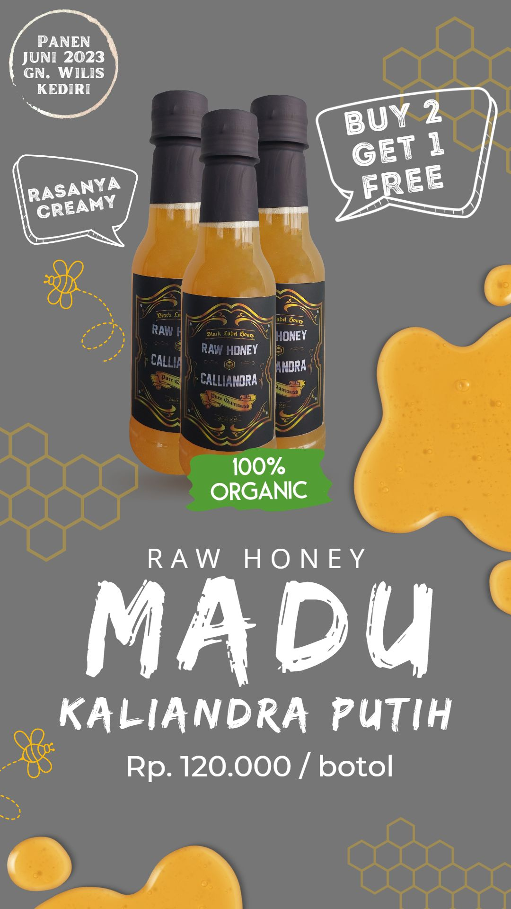
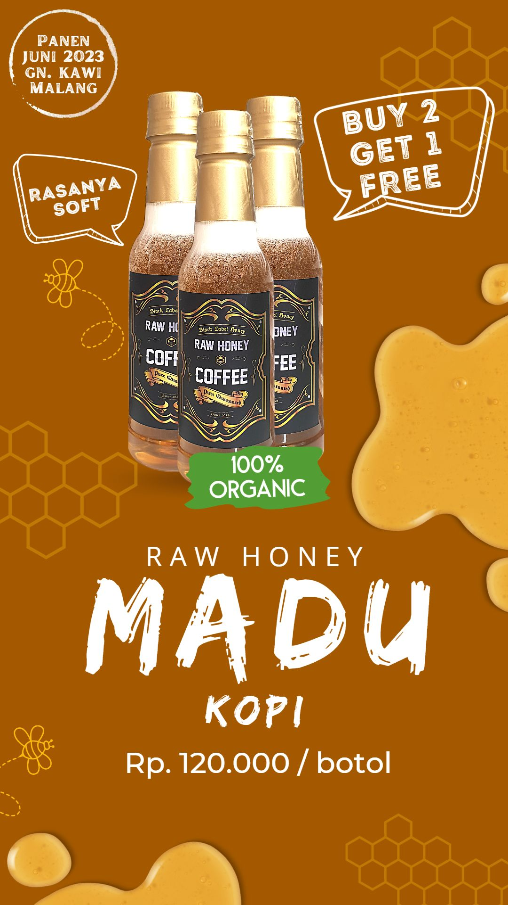

Black Label Honey

Madu Kaliandra, merupakan madu yang diambil dari nektar bunga
Kaliandra Putih. Madu yang dipanen pada awal bulan Juni 2023 di
wilayah Gn. Wilis, Kediri. Madu ini memiliki tekstur yang kental
dengan KA 22%-23%, dan rasa creamy. Sebagian orang mengatakan mirip
rasa krimer kental manis.
Madu Kopi, merupakan madu yang diambil dari nektar bunga Kopi.
Madu ini dipanen pada pertengahan bulan Juni 2023, di wilayah Gn. Kawi, Malang.
Madu Kopi ini memiliki ciri khas warna yang bening ketika awal panen.
Madu kopi ini juga memiliki rasa manis yang soft. Sangat cocok untuk dicampur dengan kopi.

Mengapa Memilih Kami
100% Berasal dari Nektar Bunga
Madu yang kami jual hanyalah madu yang berasal dari lebah yang menghisap nektar bunga secara alami.
Sehingga madu yang dihasilkan tidaklah selalu sama setiap musimnya.
Terkadang ada yang kental (Kadar Airnya rendah) dan ada juga yang encer (Kadar Airnya tinggi).
Hal ini dipengaruhi oleh faktor cuaca. Oleh karena itu, madu yang dihasilkan tidak menentu.
Bisa jadi tahun ini panen dan tahun depan tidak.
Bukan Madu Sirupan
Madu yang kami jual bukan juga madu sirupan, yaitu madu yang dihasilkan dari lebah yang diberikan
pakan gula ataupun sirup. Sebagian petani memberikan pakan lebah dengan gula ataupun sirup untuk memenuhi
kebutuhan atau mensuplai pabrik-pabrik. Madu sirupan memiliki rasa yang cenderung manis tanpa ada ciri
khas rasa ataupun aroma lainnya, dan stok madunya senantiasa tersedia.
Bukan Madu Pabrikan
Madu yang kami jual bukanlah madu pabrikan. Madu yang dihasilkan oleh pabrik-pabrik besar
dan yang banyak tersebar di berbagai macam swalayan umumnya telah dilakukan penampabahan bahan
seperti Glukosa ataupun Fruktosa. Sehingga dari 1 kg madu alami yang masuk pabrik, maka akan
berubah menjadi 2 kg madu atau bahkan menjadi 10 kg madu Diantara ciri khas madu pabrikan ialah
memiliki rasa yang konsisten rasa dan stoknya senantiasa tersedia.